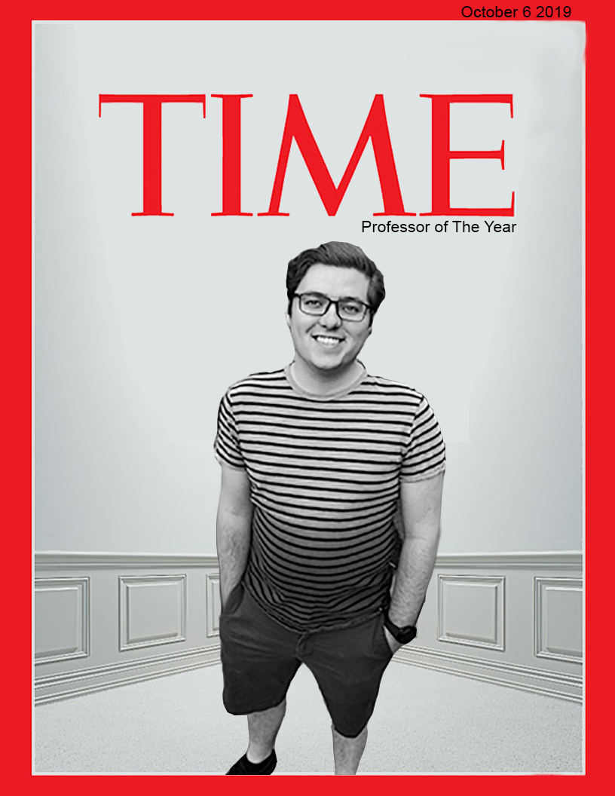

Christopher Huston
Impact of Indie Games
Home
Esports in Schools
In this magazine cover project, I edited two images which included picture of my professor and a time magazine template image. I used the two and combined them to make my professor be in the cover! This was done during my Introduction to Interactive Media Class for an assignment. Upon reflecting on this, I am glad I was able to do this to learn more about photo editing software and learn certain design elements. You can see the final product here. While I kept the photos mostly similar in combination, I also changed the colorationg to a grayscale effect, and also included the line "professor of the year" on the cover as well. I hope to improve on my artistic skills in the future, but I also know everyone has to start somewhere.
